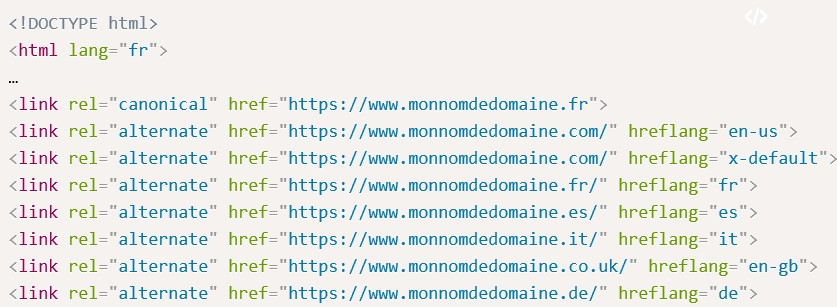

Un site web multilingue se définit comme un site "doté de contenus accessibles par langue sur diverses pages". On peut aussi parler de site web multirégional, qui lui, à pour but de rendre accessible son contenu dans un même pays comme par exemple la Belgique où trois langues sont présentes (fraçais, flamand et allemand).

Les problématique
- La population ciblée et donc prise en compte du marché ciblé:
- " Pourquoi, si je suis premier sur « location de voiture » sur Google.fr, je serais également premier sur Google.be en Belgique, Google.ca au Canada, en Afrique francophone ou en Suisse ? La réponse la plus simple à cette question est : Parce que j’ai pris en compte les paramètres régionaux et linguistiques."
- Prendre en compte les habitudes de consommation des pays étranger qui peuvent être différent de la France. Ce qui peut avoir pour but de modifier le design (Il faut prendre en compte que certaines langues ne se lisent pas de gauche à droite tel que par exemple l’arabe tandis que certaines occupent beaucoup d’espace et d’autres moins), marquer des points focaux différents.
- Faire attention aux expressions clé en SEO : faire en sorte que la traduction soit aussi un élément recherché par un pays étranger.
- L'anglais est différent de l'américain. Il faut le prendre en compte.
- Avoir un nom de domaine adapté à la cible (voir les solutions techniques)
- Le référencement :
- Les noms de domaines :
Il existe dans la pratique trois manières de proposer correctement du contenu dans une autre langue :
-
Utiliser un nom de domaine national CCTLD (Country Code Top-Level Domain) pour l’utilisateur et son SEO :
C'est considéré comme la meilleure façon de faire. Cela consiste à avoir une nom de domaine avec une extension du pays cible comme par exemple :
https://www.monnomdedomaine.fr
https://www.monnomdedomaine.co.uk
Cependant, il peut être difficile de déposer un nom de domaine dans le pays concerné. -
Exploiter un sous domaine pour les paramétrages linguistiques :
Elle est décrit comme la meilleure solution lorsque la première n'est pas possible à mettre en place et est conseillé du point de vue SEO.
https://en-gb.monnomdedomaine.fr
https://it.monomdedomaine.fr
On bénéficie beaucoup moins des paramètres régionaux propres à une extension nationale. -
Exploiter le répertoire langue sur un site Internet :
Cette solution est considérée comme la plus mauvaise des solutions. En effet, les robots des moteurs de recherche auront plus de mal analyser et différencier les contenus pour afficher un résultat. On perd en efficacité, y compris sur la langue d’origine en créant un répertoire de plus.
-
Utiliser un nom de domaine national CCTLD (Country Code Top-Level Domain) pour l’utilisateur et son SEO :
- Les noms de domaines :
- Définir la langue :
- L'ajout des balises rel alternate href lang pour la gestion du multilingue :
Cela va permettre de faciliter la compréhension de l'arborescence du ou des sites internet dans les différentes langues par les moteurs en marquant les différents contenus d'un site web. Cela va passer par l'ajout de plusieurs points necessaires à la mise en place de ces balises :
- La balise lang dans l’en-tête du document :
On spécifie ici le langage utilisée pour l'élément
-
L’ajout d’une rel canonical :
Une balise canonical (alias "rel canonical") est un moyen d'indiquer aux moteurs de recherche qu'une URL spécifique représente la copie originale d'une page. L'utilisation de la balise canonical permet d'éviter les problèmes causés par un contenu identique ou "dupliqué" apparaissant sur plusieurs URL.
- L’ajout d’une rel alternate hreflang x-default
a hreflang x-default est destinée aux situations où vous souhaitez fournir une page de repli générique pour toute langue/tout lieu.
- L’ajout d’une rel alternate hreflang par langue
Utiliser l'attribut "hreflang" ou des sitemaps pour les pages spécifiques à une langue ou à une région : cela permet une redirection vers une version la plus appropriée dans les recherches google.
Ce type de configuration permet d'avoir une sémantique dédiée, une monnaie adaptée et une expérience utilisateur optimisée.
Exemple : Pour aller plus loin, rendez-vous sur le Digital Guide IONOS.
- La balise lang dans l’en-tête du document :
- L'interdiction européenne sur le blocage géographique :
Selon l'article 3, il faut mettre en place un sélecteur de langue pour rendre le site accessible à tout le monde même si le public n'est pas visé. TODO: regarder comment faire
https://eur-lex.europa.eu/legal-content/FR/TXT/HTML/?uri=CELEX:32018R0302&from=FR
- L'ajout des balises rel alternate href lang pour la gestion du multilingue :
La bebo ne dormas.
La bebo ne dormas.